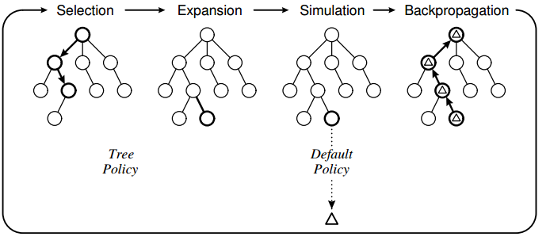
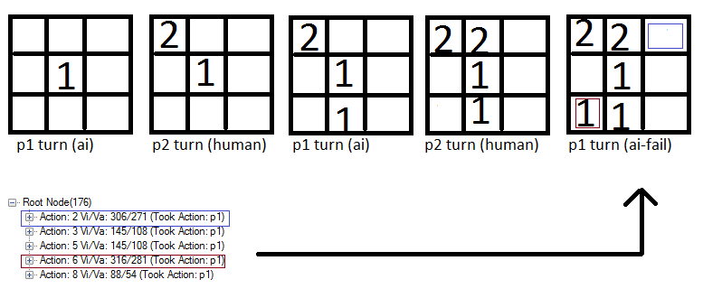

Monte Carlo Tree Search: Implementation for Tic-Tac-Toe
Edit: Uploded the full source code if you want to see if you can get the AI to perform better: https://www.dropbox.com/s/ous72hidygbnqv6/MCTS_TTT.rar
Edit: The search space is searched and moves resulting in losses are found. But moves resulting in losses are not visited very often due to the UCT algorithm.
To learn about MCTS (Monte Carlo Tree Search) I've used the algorithm to make an AI for the classic game of tic-tac-toe. I have implemented the algorithm using the following design:
 The tree policy is based on UCT and the default policy is to perform random moves until the game ends. What I have observed with my implementation is that the computer sometimes makes errorneous moves because it fails to "see" that a particular move will result in a loss directly.
For instance:  Notice how the action 6 (red square) is valued slightly higher than the blue square and therefore the computer marks this spot. I think this is because the game policy is based on random moves and therefore a good chance exist that the human will not put a "2" in the blue box. And if the player does not put a 2 in the blue box, the computer is gaurenteed a win.
My Questions
1) Is this a known issue with MCTS or is it a result of a failed implementation?
2) What could be possible solutions? I'm thinking about confining the moves in the selection phase but I'm not sure :-)
The code for the core MCTS:
//THE EXECUTING FUNCTION public unsafe byte GetBestMove(Game game, int player, TreeView tv) { //Setup root and initial variables Node root = new Node(null, 0, Opponent(player)); int startPlayer = player; helper.CopyBytes(root.state, game.board); //four phases: descent, roll-out, update and growth done iteratively X times //----------------------------------------------------------------------------------------------------- for (int iteration = 0; iteration < 1000; iteration++) { Node current = Selection(root, game); int value = Rollout(current, game, startPlayer); Update(current, value); } //Restore game state and return move with highest value helper.CopyBytes(game.board, root.state); //Draw tree DrawTree(tv, root); //return root.children.Aggregate((i1, i2) => i1.visits > i2.visits ? i1 : i2).action; return BestChildUCB(root, 0).action; } //#1. Select a node if 1: we have more valid feasible moves or 2: it is terminal public Node Selection(Node current, Game game) { while (!game.IsTerminal(current.state)) { List<byte> validMoves = game.GetValidMoves(current.state); if (validMoves.Count > current.children.Count) return Expand(current, game); else current = BestChildUCB(current, 1.44); } return current; } //#1. Helper public Node BestChildUCB(Node current, double C) { Node bestChild = null; double best = double.NegativeInfinity; foreach (Node child in current.children) { double UCB1 = ((double)child.value / (double)child.visits) + C * Math.Sqrt((2.0 * Math.Log((double)current.visits)) / (double)child.visits); if (UCB1 > best) { bestChild = child; best = UCB1; } } return bestChild; } //#2. Expand a node by creating a new move and returning the node public Node Expand(Node current, Game game) { //Copy current state to the game helper.CopyBytes(game.board, current.state); List<byte> validMoves = game.GetValidMoves(current.state); for (int i = 0; i < validMoves.Count; i++) { //We already have evaluated this move if (current.children.Exists(a => a.action == validMoves[i])) continue; int playerActing = Opponent(current.PlayerTookAction); Node node = new Node(current, validMoves[i], playerActing); current.children.Add(node); //Do the move in the game and save it to the child node game.Mark(playerActing, validMoves[i]); helper.CopyBytes(node.state, game.board); //Return to the previous game state helper.CopyBytes(game.board, current.state); return node; } throw new Exception("Error"); } //#3. Roll-out. Simulate a game with a given policy and return the value public int Rollout(Node current, Game game, int startPlayer) { Random r = new Random(1337); helper.CopyBytes(game.board, current.state); int player = Opponent(current.PlayerTookAction); //Do the policy until a winner is found for the first (change?) node added while (game.GetWinner() == 0) { //Random List<byte> moves = game.GetValidMoves(); byte move = moves[r.Next(0, moves.Count)]; game.Mark(player, move); player = Opponent(player); } if (game.GetWinner() == startPlayer) return 1; return 0; } //#4. Update public unsafe void Update(Node current, int value) { do { current.visits++; current.value += value; current = current.parent; } while (current != null); }
Answer
Ok, I solved the problem by adding the code:
//If this move is terminal and the opponent wins, this means we have //previously made a move where the opponent can always find a move to win.. not good if (game.GetWinner() == Opponent(startPlayer)) { current.parent.value = int.MinValue; return 0; }
I think the problem was that the search space was too small. This ensures that even if selection does select a move that is actually terminal, this move is never chosen and resource are used to explore other moves instead :).
Now the AI vs AI always plays tie and the Ai is impossible to beat as human :-)
Suggest
Ok, I solved the problem by adding the code:
//If this move is terminal and the opponent wins, this means we have //previously made a move where the opponent can always find a move to win.. not good if (game.GetWinner() == Opponent(startPlayer)) { current.parent.value = int.MinValue; return 0; }
I think the problem was that the search space was too small. This ensures that even if selection does select a move that is actually terminal, this move is never chosen and resource are used to explore other moves instead :).
Now the AI vs AI always plays tie and the Ai is impossible to beat as human :-)